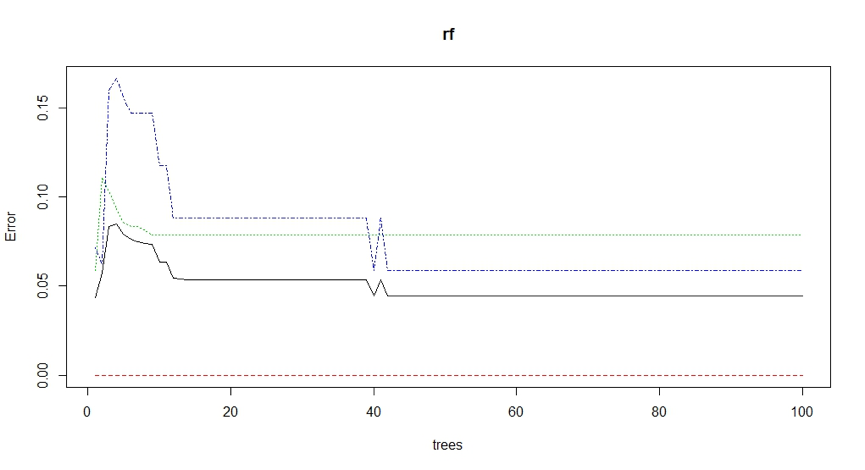
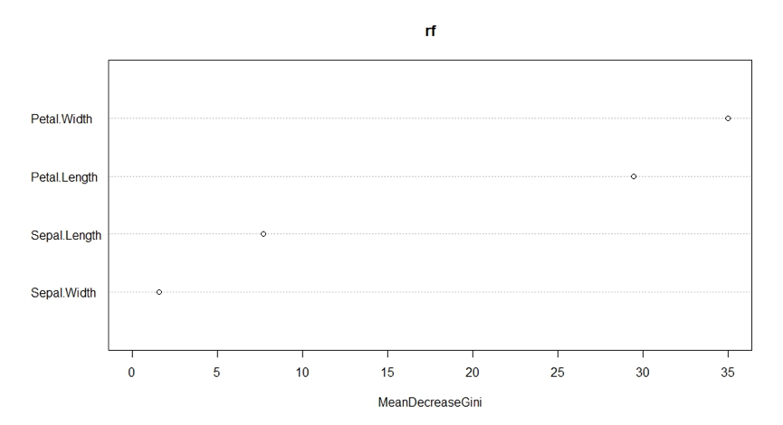
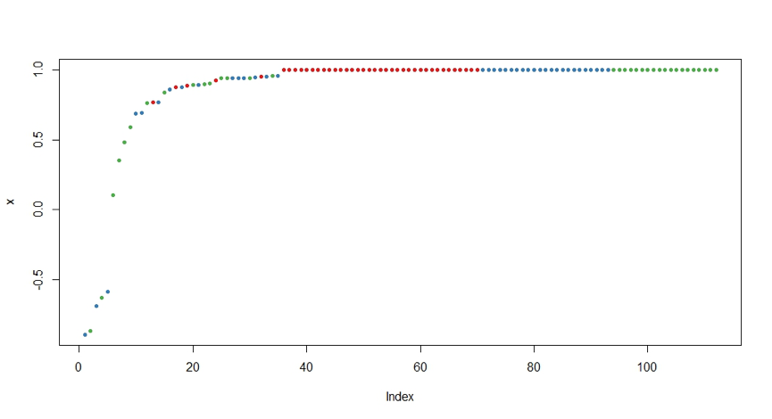

随机森林是一个包含多个决策树的分类器
在机器学习中，随机森林是一个包含多个决策树的分类器，顾名思义，是用随机的方式建立一个森林，森林里面有很多的决策树组成，随机森林的每一棵决策树之间是没有关联的。在得到森林之后，当有一个新的输入样本进入的时候，就让森林中的每一棵决策树分别进行一下判断，看看这个样本应该属于哪一类（对于分类算法），然后看看哪一类被选择最多，就预测这个样本为那一类。下面使用randomForest包在iris数据集上 构建预测模型。
# 加载randomForest函数包
library(randomForest)
# 导入iris数据集
data(iris)
# 随机生成采样数据，并将原数据集分成两部分，70%为训练集，30%为测试集
set.seed(1234)
ind <- sample(2,nrow(iris),replace=TRUE,prob=c(0.7,0.3))
testData <- iris[ind==2,]
trainData <- iris[ind==1,]
# 调用randomForest函数
rf <- randomForest(Species~.,data=trainData,ntree=100,proximity=TRUE)
table(predict(rf),trainData$Species)
setosa versicolor virginica
setosa 40 0 0
versicolor 0 35 2
virginica 0 3 32
# 调用randomForest函数
print(rf)
Call:
randomForest(formula = Species ~ ., data = trainData, ntree = 100, proximity = TRUE)
Type of random forest: classification
Number of trees: 100
No. of variables tried at each split: 2
OOB estimate of error rate: 4.46%
Confusion matrix:
setosa versicolor virginica class.error
setosa 40 0 0 0.00000000
versicolor 0 35 3 0.07894737
virginica 0 2 32 0.05882353
# 调用randomForest函数
attributes(rf)
# 调用randomForest函数
importance(rf)
# 根据生成的随机森林中不同的树绘制误差率
plot(rf)

# 通过调用函数importance()以及varImpPlot()获知变量的重要性
importance(rf)
MeanDecreaseGini
Sepal.Length 7.668898
Sepal.Width 1.537643
Petal.Length 29.480942
Petal.Width 35.022696
varImpPlot(rf)

# 使用测试集对已经构建好的的随机森林进行测试，并通过函数table()和margin()查看结果
irisPred <- predict(rf,newdata=testData)
table(irisPred,testData$Species)
irisPred setosa versicolor virginica
setosa 10 0 0
versicolor 0 12 2
virginica 0 0 14
# 使用测试集对已经构建好的的随机森林进行测试，并通过函数table()和margin()查看结果
plot(margin(rf,testData$Species))
